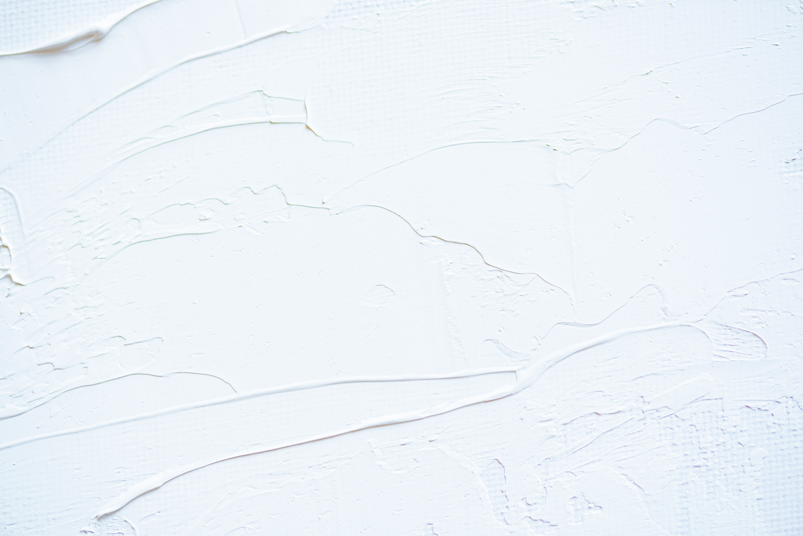

Interior Primer
What is a primer?
A primer is a preparatory coating that helps paintadhere better, providing a smooth, even surface fora flawless finish. It also seals porous materials,blocks stains, and enhances durability for long-lasting results.
PrimerUsing the right primer can make all the difference inyour paint job, preventing peeling, improvingcoverage, and ensuring vibrant, lasting color.Whether for walls, wood, or metal, our qualityprimer sets the stage for a professional finish.


Why our Primer?
- Superior Adhesion - Ensures paint bonds tovarious surfaces, preventing peeling and flaking.
- Stain-Blocking Power - Effectively coverswater stains, smoke damage, and discoloration.
- Mold & Mildew Resistance - Provides addedprotection in high-moisture areas likebathrooms and kitchens.
- Smooth, Even Coverage - Seals poroussurfaces, reducing the number of paint coats.
- Fast-Drying & Low-Odor - Allows for quickerproject completion with minimal fumes for amore comfortable application.